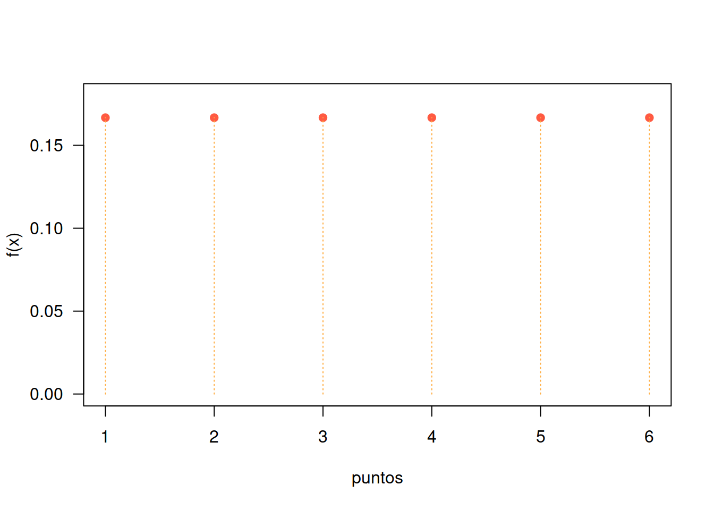
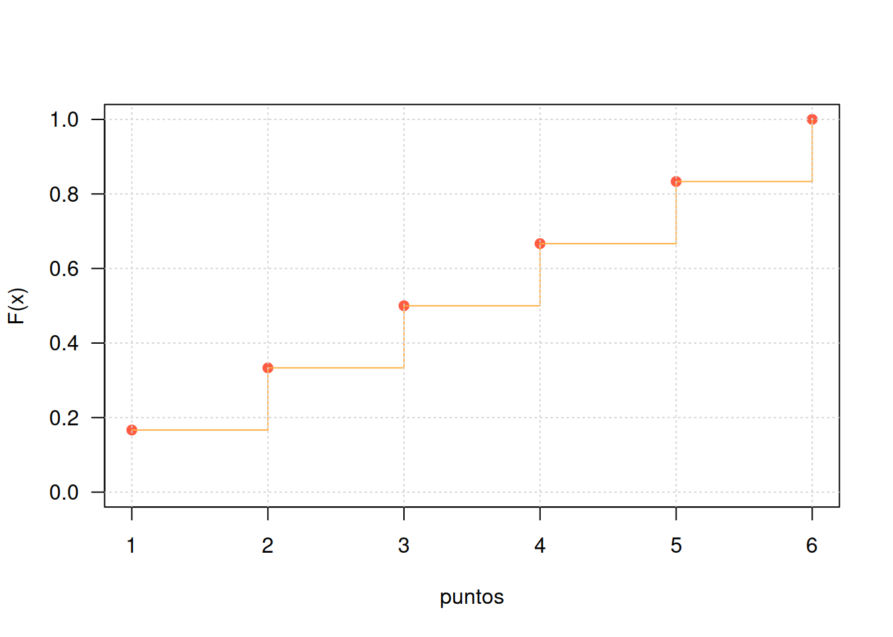
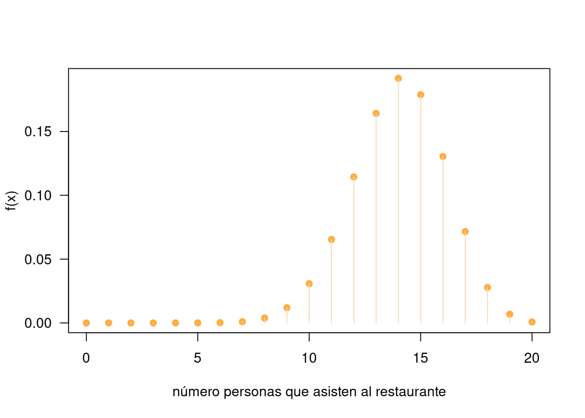
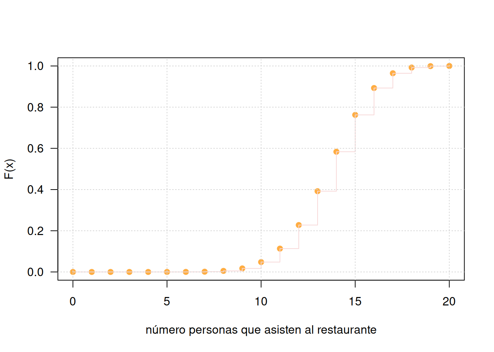
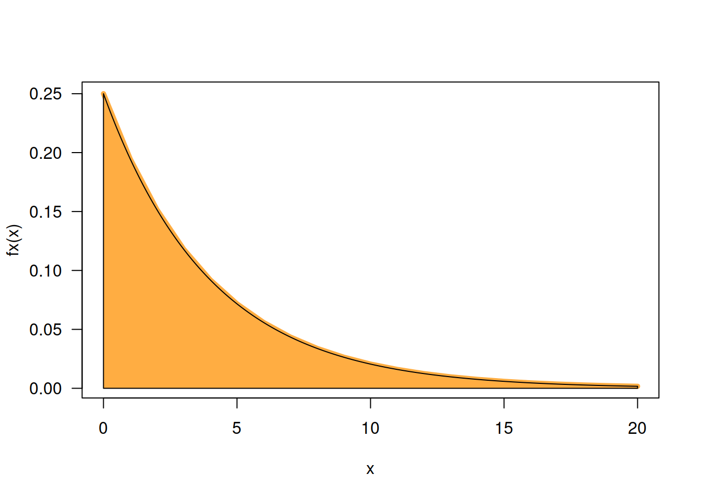

Estadística para la toma de decisiones
dgonzalez
Introducción
El concepto de variable aleatoria constituye uno de los conceptos principales de la probabilidad y estadística. A este concepto se pueden asociar dos paradigmas de evolución histórica segun J.A. Alberth & B. Ruiz (2013) , El primero basada en el resultado de fenómenos aleatorios y por otro lado el proceso que relaciona los conjuntos de espacio muestral y sus respectivas probabilidades, para definir el concepto de variable aleatória como función de números reales y el espacio para el sustento matemático.
Ahora, se puede relacionar el concepto de variable aleatoria a diferentes contextos donde se requiere dar respuesta a preguntas relacionadas con la ocurrencia o no de fenómenos aleatorios que eventualmente se presentarán en el futuro, como por ejemplo:
¿Cuánto tiempo se tarda un estudiante en ir de su casa a la universidad?
¿Cuál será el resultado en mi próximo examen de estadística?
El dueño de la cafetería se puede preguntar ¿Cuantas botellas de agua se venderán esta semana?
¿Cuánto tiempo tardaría la entrega de un paquete una empresa de mensajería?
¿Cuánto tiempo dura la bombilla de un vehículo?
¿Qué diámetro tendrá la perforación de una máquina en una lámina de acero que hace parte de una puerta de un vehículo?
¿Cuantos mensajes recibiré hoy por WhatsApp?
En todos los casos se trata de preguntas que tienen diferentes respuestas, o que no tienen un único valor como respuesta. En este documento se estudiará el concepto de variable aleatoria y mediante la definición de una función matemática que nos permita caracterizar su comportamiento, realizaremos diferentes cálculos de probabilidades de interés. Para ello será necesario retomar conocimientos de cálculo integral que serán expuestos en su momento mediante funciones de fácil manejo.
En esta unidad se tratará el caso univariado discreto, luego el caso continuo,con sus principales características, conceptos relacionados con los vistos en el modulo anterior.
Una variable aleatoria \(X\) es una función que asigna a cada valor de un espacio muestral \(S\) un numero . El conjunto formado por estos números conforman un subconjunto de los reales llamado rango de la variable X, (\(R_{_{X}}\))
Las variables aleatorias se clasifican teniendo en cuenta las características de su rango en discretas, continuas. La distribución de una variable aleatoria será univariada si se estudia el comportamiento de una sola variable y serán multivariadas si se considera el comportamiento conjunto de varias variables definidas sobre el mismo espacio muestral.
Una variable \(X\) se considera DISCRETA si su rango \(R_{_{X}}\) es un conjunto finito o infinito numerable de valores.
Se considera CONTINUA si su rango \(R_{_{X}}\) es un conjunto de valores infinito no numerable y generalmente corresponde a unión de intervalos.
Un experimento aleatorio \(E\), consiste en lanzar una moneda balanceada al aire tres veces y observar el orden de caras (\(c\)) y sellos (\(s\)) que se obtienen en los tres lanzamientos. El espacio muestral \(S\) de \(E\), estará dado por: |
\[S =\{(s,s,s),(s,s,c),(s,c,s),(s,c,c),(c,s,s),(c,s,c),(c,c,s),(c,c,c)\} \]

Donde :
\(X\) es la variable que asigna a cada resultado el número de caras en los tres lanzamientos de la moneda.
\(R_{_{X}}=\{0,1,2,3\}\) determinado por la regla de asignación: número de caras en los tres lanzamientos de la moneda y corresponde al rango de valores que puede tomar la variable aleatoria.
\(f_{_{X}}(x)=P(X=x)\) conforma la función que asigna a cada valor de la variable una probabilidad
En este ejemplo :
- \((X=0)=\{(s,s,s)\}\) ;
- \((X=1)=\{(s,s,c),(s,c,s),(c,s,s)\}\) ;
- \((X=2)=\{(s,c,c),(c,s,c),(c,c,s) \}\) y
- \((X=3) =\{(c,c,c) \}\).
Bajo el supuesto que la moneda es balanceada, se cumple que los resultados en \(S\) son igualmente posibles y por lo tanto:
\[f_{_{X}}(0) =P(X=0)= \frac{1}{8} \hspace{.2cm} ,\hspace{.5cm} f_{_{X}}(1) = P(X=1)=\frac{3}{8},\] \[f_{_{X}}(2) = P(X=2)=\frac{3}{8}\hspace{.2cm} ,\hspace{.5cm} f_{_{X}}(3) =P(X=3)= \frac{1}{8}\]
Variables discretas
Como se mencionó anteriormente una variable aleatoria se considera como DISCRETA cuando el conjunto de posibles valores que puede tomar la variables es un conjunto finito o infinito numerable. En la gran mayoria de los casos este conjunto corresponde a los números enteros.
Para catacterizar la variable se define la función de distribución de probabilidad que modela la asignación de las probabilidades
Para \(X\) un variable aleatoria discreta, su función de distribución de probabilidad estará dada por \(f(x)\), la cual proporciona las probabilidades asociadas a todos los valores de su rango \(R_{X}\) . Esta función debe cumplir las siguientes propiedades:
\(f(x) = P(X=x) \geq 0\)
\(\sum_{R_X} f(x) = 1\)
Por lo general este tipo de variables proceden del conteo y empiezan por número de….
Las siguientes variables se clasifican como variables aleatorias discretas :
X : Número de llamadas que entran a un conmutador diariamente
Y: Número de personas contagiadas por Covid19 durante un día
Z: Número de quejas reportadas a una sucursal bancaria en un día
W: Número de accidentes producidos en una ciudad
S: Número de huevos producidos diariamente en una avícola
T: Número de hijos en una familia
M: Número de mensajes enviados en un grupo de Whatsapp
Como complemento de \(f(x)\) y debido a que puede resultar más interesante calcular probabilidades de rangos de valores se define la función de distribución acumulada \(F(x)\)
Sea \(X\) una variable aleatoria continua con función de densidad \(f_{X}(x)\), se define la función de distribución acumulada, \(F_{X}(x)\), como:
\[F(x)=P(X\leq x)=\sum _{t \leq x}f(t)\]
Para la variable definida como \(X\): número de puntos obtenidos al lanzar un dado tenemos que :
| \(x_{i}\) | 1 | 2 | 3 | 4 | 5 | 6 |
|---|---|---|---|---|---|---|
| \(f(x)\) | \(\dfrac{1}{6}\) | \(\dfrac{1}{6}\) | \(\dfrac{1}{6}\) | \(\dfrac{1}{6}\) | \(\dfrac{1}{6}\) | \(\dfrac{1}{6}\) |
Esta asignación la podemos resumir en la función:
\(f(x) = \left \{ \begin{matrix} \dfrac{1}{6} & \mbox{si }\mbox{ x=1,2,3,4,5,6} \\ \\ 0 & \mbox{ en cualquier otro caso}\end{matrix}\right.\)
Tambien podemos representar esta función de manera gráfica

Para la construcción de la función de distribución acumulada se acumulan los valores correspondientes a las probabilidades puntuales de manera creciente

| x | f(x) | F(x) |
|---|---|---|
| 1 | 0.166667 | 0.1667 |
| 2 | 0.166667 | 0.3333 |
| 3 | 0.166667 | 0.5000 |
| 4 | 0.166667 | 0.6667 |
| 5 | 0.166667 | 0.8333 |
| 6 | 0.166667 | 1.0000 |
El restaurante “Asados y algo más” solo da servicio mediante reservas. De acuerdo con los registros diarios en los últimos diez años se sabe que el treinta por ciento de las personas que reservan no llegan al restaurante. El restaurante tiene veinte puestos y acepta 25 reservas. La función de distribución probabilidad que modela el número de personas que llegan al restaurante es \(f\), dada por:
\[f_{_{X}}(x) = \left \{ \begin{matrix} \displaystyle\binom{25}{x}(0.7)^{x}(0.3)^{25-x} & \mbox{si } x=0,1,2,\ldots,25\\ & \\ 0 & \mbox{en otro caso } \end{matrix}\right. \]
En este caso se utiliza la función combinatoria y el operador de sumatoria vista en la Guía 0.2
Representada de manera gráfica:
x=0:20
fx=choose(20,x)*0.70^x*0.30^(20-x)
Fx=cumsum(fx)
tabla=data.frame(x, fx, Fx)
knitr::kable(tabla)| x | fx | Fx |
|---|---|---|
| 0 | 0.0000000 | 0.0000000 |
| 1 | 0.0000000 | 0.0000000 |
| 2 | 0.0000000 | 0.0000000 |
| 3 | 0.0000005 | 0.0000005 |
| 4 | 0.0000050 | 0.0000056 |
| 5 | 0.0000374 | 0.0000429 |
| 6 | 0.0002181 | 0.0002610 |
| 7 | 0.0010178 | 0.0012789 |
| 8 | 0.0038593 | 0.0051382 |
| 9 | 0.0120067 | 0.0171448 |
| 10 | 0.0308171 | 0.0479619 |
| 11 | 0.0653696 | 0.1133315 |
| 12 | 0.1143967 | 0.2277282 |
| 13 | 0.1642620 | 0.3919902 |
| 14 | 0.1916390 | 0.5836292 |
| 15 | 0.1788631 | 0.7624922 |
| 16 | 0.1304210 | 0.8929132 |
| 17 | 0.0716037 | 0.9645169 |
| 18 | 0.0278459 | 0.9923627 |
| 19 | 0.0068393 | 0.9992021 |
| 20 | 0.0007979 | 1.0000000 |
#DT::datatable(head(tabla, 21),fillContainer = FALSE, options = list(pageLength = 12))

P(X=0) = 0 P(X=15) = 0.178863 P(X<15) = P(X<=14) = 0.5836 P(X >15) = 1 - P(X<=14) = 0.4164Variables continuas
Como se mencionó se considera una variable como continua cuando el conjunto de valores que puede tomar es un conjunto infinito no numerable, es decir que siempre podrá haber un valor entre dos valores de ella.
Para este caso la probabilidad se puede modelar a través de una función continua, la cual se puede visualizar al construir un gráfico de densidad a partir de una muestra de ellos. A esta función se le llama función de densidad de probabilidad
En el caso de las variables aleatorias continuas por lo general proceden de una medición como por ejemplo:
T: Tiempo que tarda un estudiante en responder un examen
P: Peso de un bebe recien nacido
E: Edad de una persona
V: Tiempo que tarda un vehículo en requerir una reparación de su motor
D: Diámetro de un agujero realizado en una lamina de acero
X: Cantidad de azúcar contenida en un refresco
C: Proporción de cemento en concreto
La función de densidad de probablidad se define como \(f(x)\), tal que cumpla las siguientes condiciones:
\(f(x) \geq 0\)
\(\displaystyle\int\limits_{-\infty}^{+\infty}f(x)\:dx =1\)
\(P(a < X < b)=\displaystyle\int\limits_{a}^{b}f(x)\:dx\)
Para el caso continuo la función de distribución de probabilidad corresponde a una integral
\(F_{_X}(x)=P(X \leq x)=\displaystyle\int \limits_{-\infty}^{x}f_{_X}(t)\:dt\)
\(F(x) = P(X \leq x) = P(X < x)\)
Con base en información histórica una compañía que fabrica lavadoras determinó que el tiempo \(Y\) (en años) para que el electrodoméstico requiera una reparación mayor se obtiene mediante la siguiente función de densidad de probabilidad:
\[f_{_{X}}(x) = \left \{ \begin{matrix} \dfrac{1}{4} e^{-x/4} & \mbox{ , } x \geq 0\\ & \\ 0 & \mbox{en otro caso } \end{matrix}\right. \]
Para tener la seguridad que \(f(x)\) puede ser una función de densidad de probabilidad se debe verificar
\(\displaystyle\int\limits_{0}^{+\infty} \dfrac{1}{4} e^{-x/4} \:dx =1\)
1 with absolute error < 2.7e-05
Valor esperado
El valor esperado o esperanza matemática y la varianza corresponde a dos los conceptos principales asociados a una variable aleatoria. El concepto de esperanza está relacionado en un principio con los juegos de azar, pues los jugadores querían conocer cual era el valor esperado de ganar cuando jugaban un gran número de veces.
La esperanza matemática de una variable aleatoria X, corresponde a un valor que representa el valor más probable que ocurra o la media población de la variable aleatoria denotada por \(E[x]\) o tambien \(\mu\)
Sea \(X\) una variable aleatoria discreta o continua. La esperanza matemática de \(X\) o valor esperado, \(E(X)\) o bien \(\mu\), se define respectivamente como, \[\begin{eqnarray*} E(X)&=&\displaystyle\sum\limits_{x}^{}x_{i}f(x_{i}) \hspace{1cm} \text{Caso discreto} \\ E(X)&=&\displaystyle\int\limits_{-\infty}^{+\infty}x f(x)dx \hspace{1cm} \text{Caso continuo} \end{eqnarray*}\]
En el caso continuo y similarmente para el caso discreto.
\(E(k) = k\), para todo numero real \(k\).
\(E(kX) = k E(X)\), para todo número real \(k\).
\(E(aX + b) = a E(X) + b\), para todo par de números \(a\) y \(b\)
\(E(aX + bY) = a E (X) + b E(Y)\)
\(E(XY) = E(X)E(Y)\), unicamente en el caso que \(X\) e \(Y\) sean variables aleatorias independientes
Varianza
Otra caracteristica importante de las variables aleatorias corresponde a la varianza que se denota por \(V[X]\) o \(\sigma^{2}\). Antes de definirla veremos el concepto de momento de una variable aleatoria
Sea \(X\) una variable aleatoria discreta o continua. El momento de orden \(k\) se define como: \[\begin{eqnarray*} E(X^{k})&=&\displaystyle\sum\limits_{x}^{}x_{i}^{k}f(x_{i}) \hspace{1cm} \text{Caso discreto} \\ E(X^{k})&=&\displaystyle\int\limits_{-\infty}^{+\infty}x^{k} f(x)dx \hspace{1cm} \text{Caso continuo} \end{eqnarray*}\]
Con este nuevo elemento se define la varianza de una variable aleatorias como la diferencia entre el segundo momento y el cuadrado del primer momento
\[V[X] = E[X^{2}]-(E[X])^{2} = E[X^{2}]-\mu^{2}\]
\(V[X] \geq 0\)
\(V[k] = 0\), para todo número real \(k\)
\(V[X + k] = V[X]\), para todo número real \(k\)
\(V[kX] = k^{2}V[X]\), para todo número real \(k\)
\(V[aX + bY] = a^{2}V[X] + b^{2}V[Y] + 2ab \hspace{.2cm}Cov[XY]\), siendo \(a\) y \(b\) números reales. En el caso se ser X y Y variables aleatorias independientes la igualdad será: \(V[aX + bY] = a^{2}V[X] + b^{2}V[Y]\)
El valor esperado y la varianza para el número de personas que asisten al restaurante del ejemplo 3 son :
E[X] = 27.99995 V[X] = 8.401435Este resultado nos indica que en promedio asisten al restaurante 28 personas de las cuarenta reservas aceptadas, con una varianza de 8.4 de la cual podemos obtener la desviación estándar y el coeficiente de variación
Para el ejemplo 4 correspondiente al tiempo que requiere una lavadora requiere una reparación mayor, tenemos:
E[X] = 4 V[X] = 16Esto nos indica que el valor esperado correspondiente al tiempo en que una lavadora requiere una reparación mayor es de 4 años. Para la interpretación de la varianza podemos utilizar el concepto de desviación estandar o de coeficiente de variación